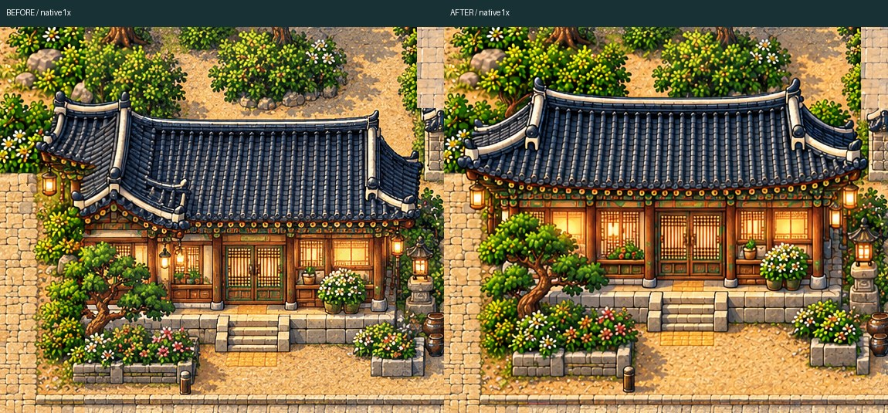
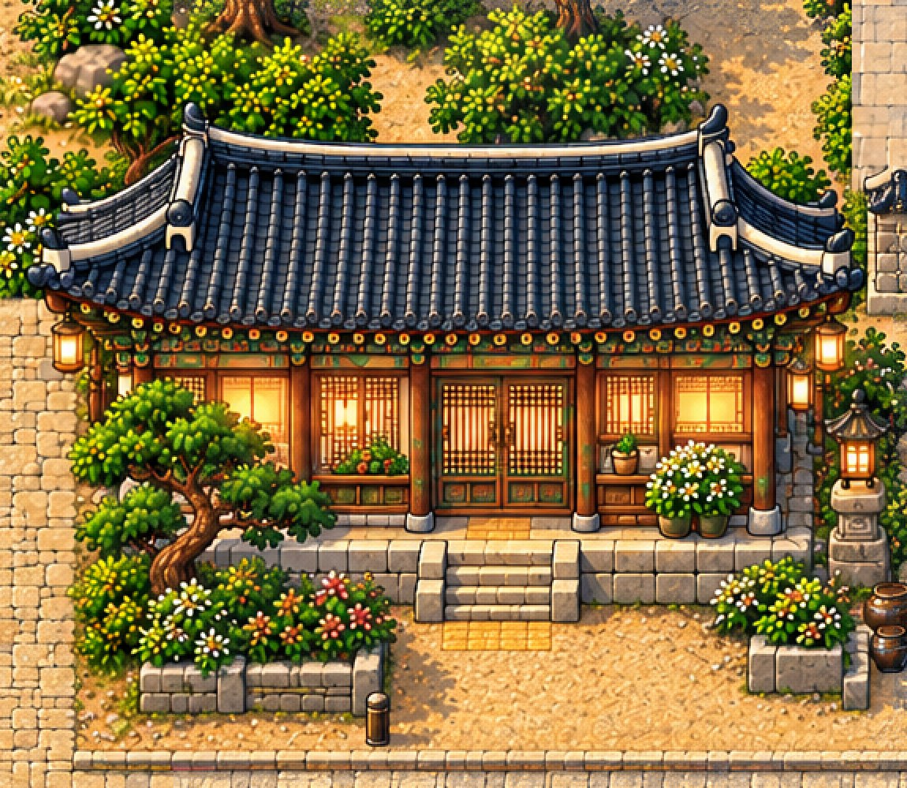
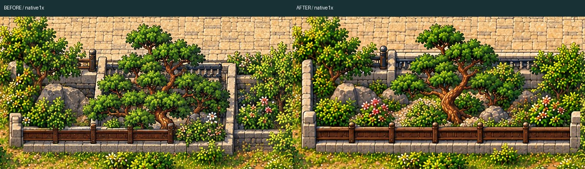
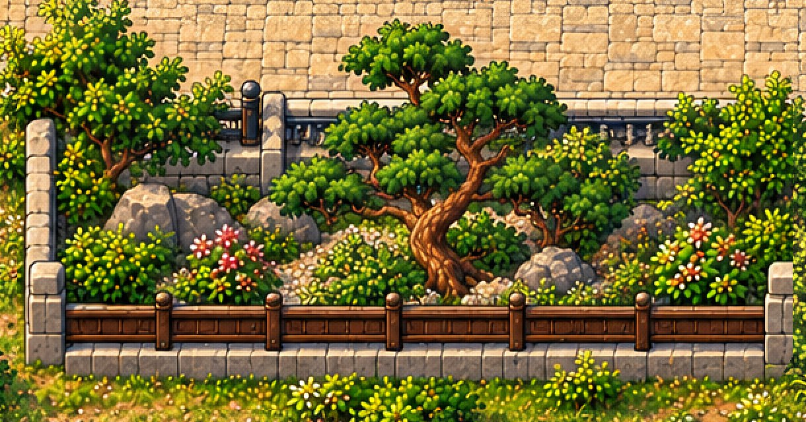
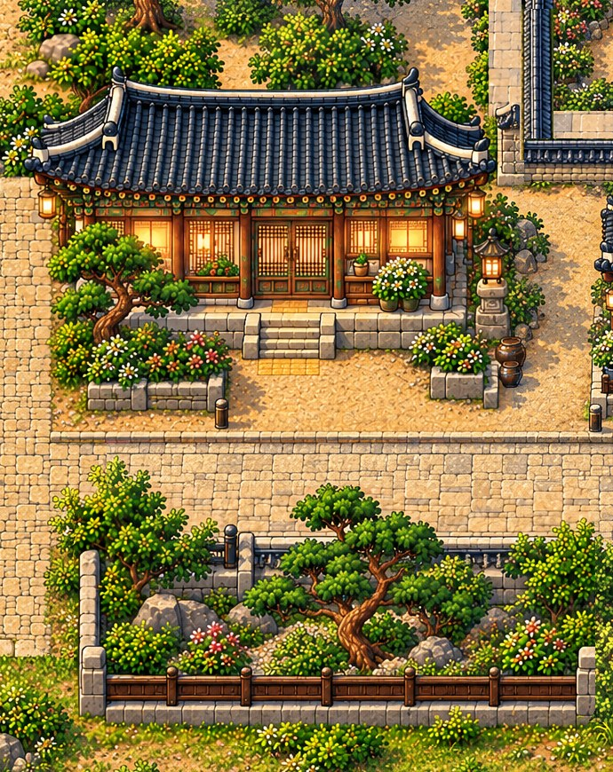

Western hanok +lower courtyard
Strict local repair; station and both Jeju bridges unchanged. Human art review pending.
Playable ZIP · QA
house

BEFORE1x · AFTER1x

courtyard

BEFORE1x · AFTER1x

Combined unannotated local view

Native1x local · Full original Phaser frame
Original-control public route validation
Native body/contact QA · Scope/collision